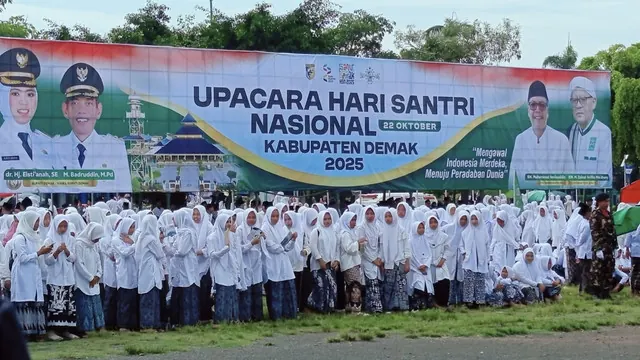
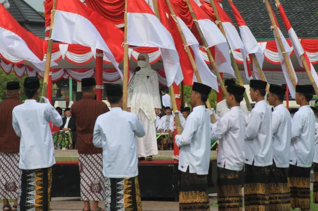

Pusat Peradaban Santri Kota Wali
Menyatukan langkah, mengawal tradisi salaf, dan membangun kemandirian ekosistem Pondok Pesantren se-Kabupaten Demak di era digitalisasi modern.
Peta Persebaran Lembaga
Sistem Geospasial RMI PCNU Demak
Sambutan Pimpinan Nahdlatul Ulama Demak
Meneguhkan khidmah mengawal tradisi salaf, menjaga kemurnian sanad keilmuan, dan memajukan peradaban santri Demak Kota Wali.

KH. M. Zainal Arifin Ma'shum
"Pesantren adalah benteng penjaga ruhani umat dan mata air sanad keilmuan Ahlussunnah wal Jama'ah. Teruslah mengistiqamahkan ngaji turots, merawat adab santri, serta menebarkan kesejukan dan kedamaian bagi Demak Kota Wali dan nusantara."

KH. M. Aminuddin, M.Si.
"Sinergi antara keteguhan tradisi salaf dan tata kelola digital adalah keniscayaan dakwah modern. Melalui portal satu data ini, kita satukan gerak langkah kelembagaan pesantren agar semakin mandiri, teratur secara administrasi, dan berdaya saing."

KH. Ibrahim Cholilullah, S.Pd.I.
"RMI berkhidmah sebagai jembatan pelindung dan pelayan bagi pesantren, madrasah diniyah, dan TPQ di 14 kecamatan. Sistem data geospasial ini hadir untuk memastikan setiap ikhtiar pendidikan tervalidasi dan mendapatkan perhatian yang layak."
Pilar Peradaban Pendidikan Keagamaan
Menjaga kemurnian sanad keilmuan, mengokohkan akhlaqul karimah, dan memperluas maslahat bagi masyarakat Demak Kota Wali.
Pondok Pesantren
Lembaga pendidikan Islam berakar tradisi nusantara untuk pendalaman ilmu agama (tafaqquh fiddin), kajian kitab kuning salaf, pembinaan kemandirian, dan khidmah sosial kemasyarakatan.
- check_circle Pengajian Turots & Sanad Keilmuan
- check_circle Pembiasaan Riyadhoh & Akhlakul Karimah
- check_circle Kemandirian Ekonomi & Poros Umat
Madrasah Diniyah
Jangkar transmisi syariat dan penguatan aqidah Ahlussunnah wal Jama'ah An-Nahdliyah. Membekali santri dengan penguasaan gramatika bahasa Arab (Nahwu-Shorof) dan fiqih aplikatif.
- check_circle Standarisasi Kurikulum PC RMI NU
- check_circle Ujian Bersama Lembaga se-Demak
- check_circle Penguatan Karakter & Adab Santri
Taman Pendidikan Al-Qur'an
Pondasi emas kecintaan anak pada Al-Qur'an. Berfokus pada makharijul huruf yang fasih, hukum tajwid yang tepat, hafalan juz 'amma, serta pembiasaan ibadah praktis sejak dini.
- check_circle Metode Yanbu'a & Qira'ati Tervalidasi
- check_circle Pembiasaan Doa Harian & Shalat Fardhu
- check_circle Wisuda & Sertifikasi Bersama
Warta Pesantren Demak

Ribuan Santri Demak Gelar Aksi Damai Solidaritas Pesantren Nusantara

PCNU Demak Matangkan Kurikulum Madrasah Diniyah Jelang Ujian

Pelatihan Manajemen Keuangan Koperasi Pesantren se-Demak
Rakorcab RMI NU Rumuskan Program Beasiswa Santri Unggulan
Profil RMI NU Demak
Mengenal susunan kepengurusan harian dan komitmen pengembangan ekosistem pesantren.
Sejarah & Khidmat
PC Rabithah Ma’ahid Islamiyah Nahdlatul Ulama (RMI-NU) Kabupaten Demak bertugas mengoordinasikan, menyatukan, dan mengawal regulasi pondok pesantren serta madrasah diniyah di bawah payung PCNU Demak. RMI berkomitmen menjaga nilai salafiyah serta melakukan reformasi administrasi digital.
Visi Organisasi
"Terwujudnya koordinasi tata kelola lembaga yang mandiri, bermartabat, unggul, serta berakar kuat pada tradisi keilmuan Aswaja An-Nahdliyah."
Pengurus Harian PC RMI NU Demak
KH. Ibrahim Cholilullah, S.Pd.I.
Ketua Tanfidziyah
K. Ahmad Badhawi Ali
Sekretaris
KH. Farid Ubaidillah, S.Kom
Bendahara Umum
Gus Muhammad Ilyas
Ketua Bidang Pendidikan
Direktori Lembaga
Database tervalidasi pendidikan keagamaan se-Kabupaten Demak
Pondok Pesantren
Wilayah Kab. DemakMenampilkan 380+ titik pesantren di seluruh wilayah Kabupaten Demak.
Pusat Layanan & Program RMI
Sistem satu pintu pelayanan digital interaktif dan pengembangan program unggulan bagi ekosistem Pesantren, Madin, dan TPQ se-Kabupaten Demak.
Lacak Status Lembaga & Berkas
Cek verifikasi NSPP, izin operasional, atau pengajuan RMI
Katalog Layanan Digital
Digitalisasi & Pendataan Terpadu
Mengelola ekosistem layanan digital seperti sistem Digdaya Pesantren untuk mempermudah akses beasiswa, program, dan identitas digital pesantren.
Pengembangan & Penguatan Pesantren
Memfasilitasi pengembangan kapasitas lembaga, kurikulum, dan metode pendidikan agama agar relevan dengan perkembangan zaman.
Buka Layanan chevron_rightKemandirian Ekonomi Pesantren
Mendorong kewirausahaan and kemandirian finansial pondok pesantren melalui inkubasi bisnis and Kopontren.
Buka Layanan chevron_rightPemberdayaan Madrasah Diniyah
Menyelenggarakan pekan madaris, forum halaqah, dan evaluasi kegiatan keagamaan untuk meningkatkan kualitas pengajar dan santri.
Buka Layanan chevron_rightPeningkatan Mutu Guru Ngaji (TPQ)
Mengadakan pelatihan, tatar guru, dan pembekalan metode pengajaran Al-Qur'an khas NU seperti metode Annahdliyah.
Buka Layanan chevron_rightPengkaderan & Jaringan Santri
Menjadi pusat pengkaderan generasi NU yang tangguh melalui pendataan kegiatan seperti Hari Santri Nasional, Liga Santri, dan program Ayo Mondok.
Helpdesk Layanan
Kendala dalam pengajuan berkas digital atau pembaruan data sistem Digdaya Pesantren? Tim kami siap membantu.
Warta & Kabar Pesantren
RMI NU Demak Siapkan Program Beasiswa Santri 2026 ke Timur Tengah
Workshop Kurikulum Kitab Kuning Digital
Optimalisasi Koperasi Pesantren se-Kecamatan Sayung
Berita Reguler
Penyerahan Bantuan Sanitasi Sehat untuk 10 Pondok Pesantren
Pemerintah Kabupaten Demak bekerja sama dengan PCNU menyalurkan bantuan fasilitas sanitasi untuk meningkatkan standar kesehatan santri mukim.
Ratusan Santri Ikuti Pelatihan Mitigasi Bencana Banjir Rob
Sebagai langkah antisipasi terhadap fenomena alam di pesisir Demak, RMI membekali santri dengan kemampuan tanggap darurat bencana berbasis masjid.
Peluncuran Antologi Puisi dan Esai Karya Santriwati Demak
Sebuah pembuktian bahwa budaya literasi dan kesusastraan di kalangan pondok pesantren perempuan terus berkembang pesat.